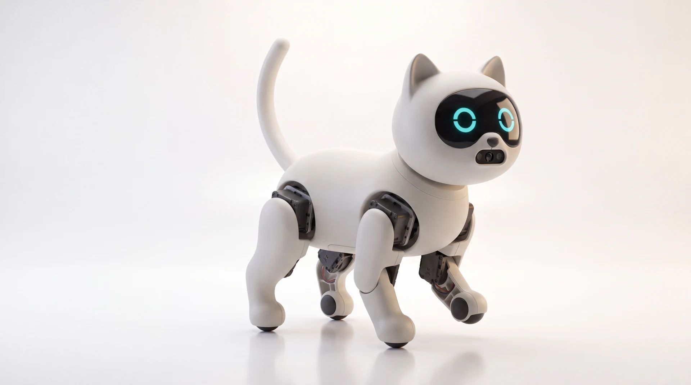
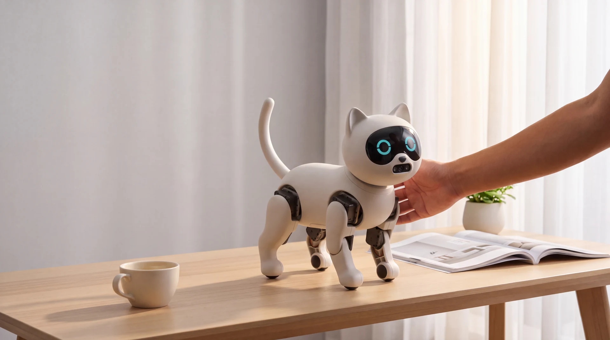
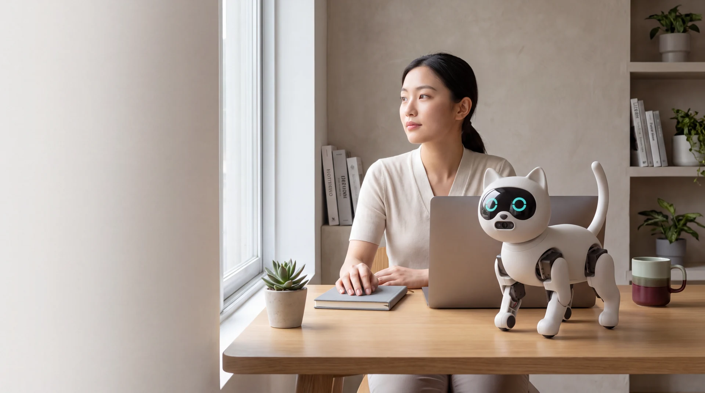
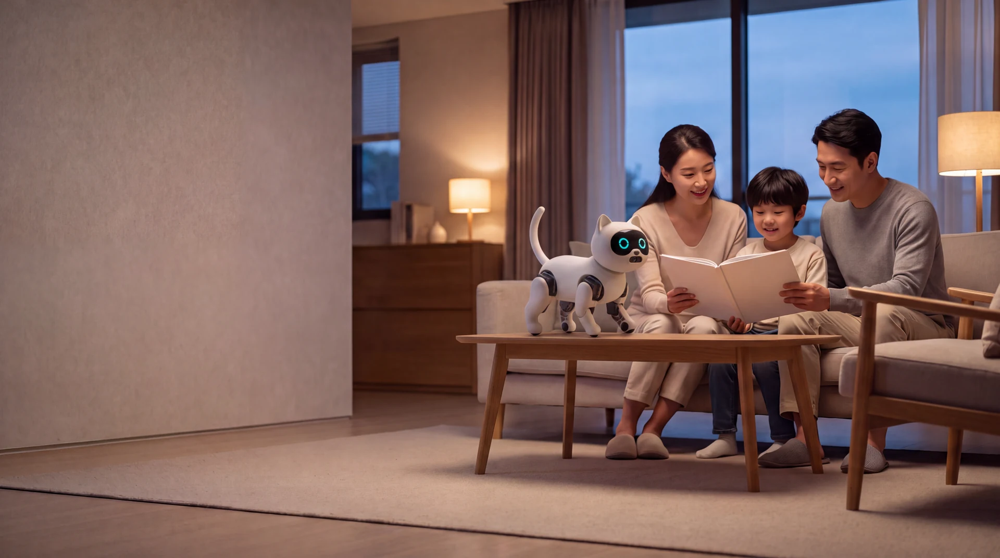
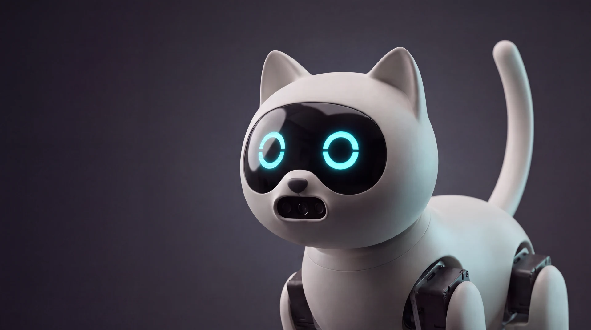

机械与仿真
初代 CAD、工程图、电控与仿真训练资料已归档；行走与自恢复成果来自初代 16 关节仿真。
查看研发资料
产品概念形象 / CONCEPT DESIGN01 / EVERYDAY COMPANY
从回家的问候，到工作间隙的片刻放松，探索机器猫如何自然融入生活。

聊聊今天，摸摸它的头，留一段轻松的相处时间。

专注、休息，也为值得庆祝的小进步留一点仪式感。

讲个故事，问个问题，让互动成为一家人共享的时光。
以上为 AI 概念影像，呈现产品使用方向；功能以样机验证与最终交付为准。
02 / MEET KITBO
68 秒，认识奇宝。英文配音 · 中英双语字幕。
03 / UNDERSTANDING TO RESPONSE
Kitbo V2 围绕阶跃星辰模型设计交互基座，连接语音、视觉理解与有明确边界的陪伴技能。

文字、语音与图像，成为理解日常的入口。
通过模型适配层，组织对话与技能调用。
问好、陪伴、专注、休息、庆祝与停止六类技能。
当前进度：适配代码与交互演示已完成；真实模型调用、手机终端接入与实机联调待验证。独立合作提案，非官方联名。
04 / BUILDING KITBO
产品从最初的机器猫研究方案，逐步推进至成本优化与陪伴交互试点。
05 / COLLABORATION
寻找长期队友、投资人与产业合作伙伴，一起完成样机验证、供应链和下一阶段产品试点。
成本预算、报价依据与工程细节按访问权限提供。
LET'S BUILD THE NEXT CHAPTER
Leon S Kennedy 陈旭林
核心动作训练数据、策略文件、详细 CAD、工程设计与供应链资料由 Leon S Kennedy（陈旭林）持有并保管，按合作权限提供。本页为产品与合作展示，不构成技术交付。